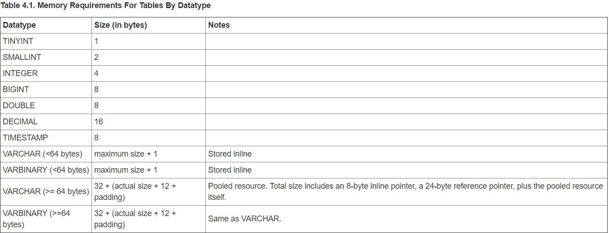

（七）VoltDB 自定义内存容量
Posted on 2017-03-10(星期五) 18:20 in VoltDB
一、VoltDB预估内存使用量
1. 预估在表中大小
实例：比如varchar类型的字段存储，它的存储大小最大为64bytes或者更大，则应该存储在共享内存当中。有一个8字节的指针存储在元组中，一个24字节的字符串引用对象，以及将数据本身存储在共享 区中所需的空间。在共享区中，在数据被存储为4字节长度，8字节的反指针指向字符串引用对象和数据。

2.预估在索引中大小
表的索引分为树索引和哈希索引，也有两种不同的算法来预估索引在实际中所占到的内存大小 树索引
(sum-of-column-sizes + 8 + 32) * rowcount
哈希索引
(((2 * rowcount) + 1) * 8) + ((sum-of-column-sizes + 32) * rowcount)
以下是实际估算的一个实例: